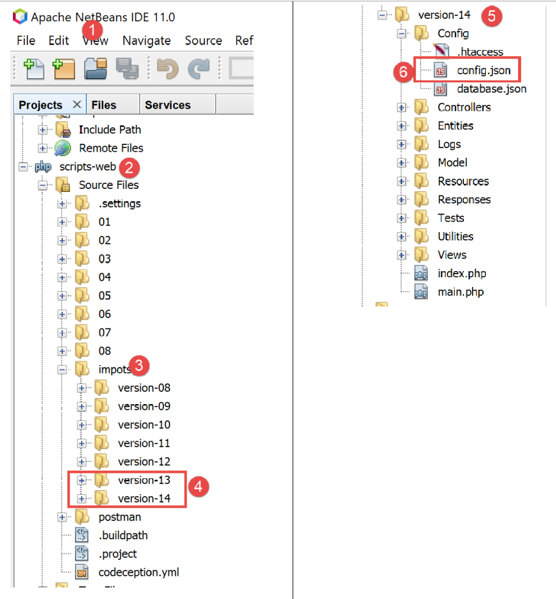
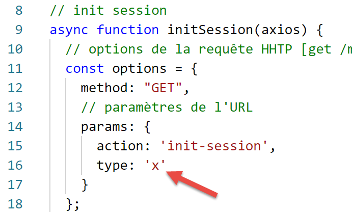

12. وظائف HTTP في جافا سكريبت

12.1. اختيار مكتبة HTTP
لقد اخترنا هنا مكتبتين:
يحتوي EcmaScript 6 بشكل أصلي على وظيفة تسمى HTTP، وهي [fetch]، والتي لم يتم تنفيذها بواسطة [node.js] (سبتمبر 2019). توجد مكتبة تسمى [node-fetch] تسمح باستخدام الدالة [fetch] في Node. تستخدم هذه المكتبة بعض المكتبات الخاصة بـ [node.js]. قد لا يكون رمز [node-fetch] قابلاً للنقل بنسبة 100٪ في بيئة غير [node]، في متصفح على سبيل المثال؛
كما توجد مكتبة باسم [axios] مخصصة لطلبات HTTP المتوافقة مع كل من [node.js] والمتصفحات. وهذه هي المكتبة التي سنستخدمها في النهاية.
سنقدم نفس البرنامج النصي المكتوب باستخدام هاتين المكتبتين لإظهار أن طريقة البرمجة باستخدامهما متشابهة.
12.2. إعداد بيئة العمل
12.2.1. تثبيت خادم حساب الضرائب
في النهاية، سنقوم بكتابة تطبيق ويب بالبنية التالية:

JS: جافا سكريبت
كود جافا سكريبت هو عميل:
- لخدمة الصفحات أو الأجزاء الثابتة؛
- لخدمة jSON؛
وبالتالي، فإن كود جافا سكريبت هو عميل jSON وبهذه الصفة يمكن تنظيمه في طبقات [UI, métier, dao] (UI: واجهة المستخدم) كما كان الحال مع عملائنا jSON المكتوبين بلغة PHP.
سيكون الخادم هو خادم حساب الضرائب الذي كتبنا منه 13 نسخة بالفعل. سنكتب النسخة الرابعة عشرة. لذا نبدأ بنسخ مجلد النسخة 13، في Netbeans، إلى مجلد النسخة 14:

- إلى [6]، ونقوم بتعديل الملف [config.json] الخاص بالإصدار 14 على النحو التالي:
{
"databaseFilename": "Config/database.json",
"rootDirectory": "C:/myprograms/laragon-lite/www/php7/scripts-web/impots/version-14",
"relativeDependencies": [
"/Entities/BaseEntity.php",
"/Entities/Simulation.php",
...
"vues": {
"vue-authentification.php": [700, 221, 400],
"vue-calcul-impot.php": [200, 300, 341, 350, 800],
"vue-liste-simulations.php": [500, 600]
},
"vue-erreurs": "vue-erreurs.php"
}
- السطر 3، نقوم بتغيير المجلد الجذر للتطبيق؛
للوصول إلى هذا الخادم، يجب تشغيل خدمات [Laragon].
وبعد ذلك، يمكننا اختبار هذه النسخة الجديدة من الخادم، والتي تتطابق في الوقت الحالي مع الإصدار 13، باستخدام [Postman] (انظر المقالة المرتبطة). يمكننا استخدام مجموعة الطلبات المستخدمة لاختبار الإصدار 12 من خادم حساب الضرائب:

- في [1-4]، استخدم الاستعلام [init-session-700] لبدء جلسة jSON؛
- في [4-5]، ضع [version-14] بدلاً من [version-12] لاختبار الإصدار 14 من المشروع؛
- عند التنفيذ، يجب أن نتلقى الرد jS0N [6] من الخادم؛
أصبحت النسخة 14 من الخادم جاهزة للعمل الآن. سنضطر إلى تعديلها قليلاً. لنتذكر API لهذا الخادم:
الإجراء | الدور | سياق التنفيذ |
init-session | يستخدم لتحديد نوع (json، xml، html) الردود المطلوبة | الطلب GET main.php?action=init-session&type=x يمكن إرسالها في أي وقت |
توثيق المستخدم | يسمح أو يمنع المستخدم من تسجيل الدخول | الطلب POST main.php?action=authentifier-utilisateur يجب أن تحتوي الطلب على معلمتين مرسلتين [user, password] لا يمكن إرسالها إلا إذا كان نوع الجلسة (json، xml، html) معروفًا |
حساب-الضريبة | يقوم بمحاكاة حساب الضريبة | الطلب POST main.php?action=calculer-impot يجب أن تحتوي الطلب على ثلاثة معلمات مرسلة [marié, enfants, salaire] لا يمكن إرسالها إلا إذا كان نوع الجلسة (json، xml، html) معروفًا وكان المستخدم قد تمت مصادقته |
lister-simulations | طلب عرض قائمة المحاكاة التي تم إجراؤها منذ بداية الجلسة | الطلب GET main.php?action=lister-simulations لا يقبل الطلب أي معلمات أخرى لا يمكن إصدارها إلا إذا كان نوع الجلسة (json، xml، html) معروفًا وكان المستخدم قد تمت مصادقته |
حذف-المحاكاة | يحذف محاكاة من قائمة المحاكاة | الطلب GET main.php?action=lister-simulations&numéro=x لا تقبل الطلب أي معلمات أخرى لا يمكن إرسالها إلا إذا كان نوع الجلسة (json، xml، html) معروفًا وكان المستخدم قد تم توثيقه |
fin-session | ينهي جلسة المحاكاة. | من الناحية الفنية، يتم حذف الجلسة القديمة على الويب وإنشاء جلسة جديدة لا يمكن إصدارها إلا إذا كان نوع الجلسة (json، xml، html) معروفًا وكان المستخدم قد تم توثيقه |
12.2.2. تثبيت مكتبات HTTP لعميل جافا سكريبت
في البداية، سنعمل مع البنية التالية:

- في [1]، يقوم سكريبت وحدة التحكم [node.js] بإرسال طلب HTTP إلى خادم حساب الضريبة jSON؛
- في [4]، يتلقى هذا الرد ويعرضه على وحدة التحكم؛
في المثال رقم 1، سنستخدم المكتبتين [node-fetch] و [axios] ثم سنحتفظ فقط بـ [axios] للأمثلة التالية. نقوم الآن بتثبيت هاتين المكتبتين Javascript من محطة [VSCode]:

سنستخدم أيضًا مكتبة [qs] التي تسمح بترميز URL لسلسلة أحرف. نتذكر أن هذا الترميز يُستخدم لترميز معلمات طلب HTTP GET أو POST.

12.3. نص برمجي [fetch-01]
يستخدم البرنامج النصي [fetch-01] المكتبة [node-fetch] لتهيئة جلسة jSON مع خادم حساب الضرائب. وفيما يلي كوده:
'use strict';
// الاستيرادات
import fetch from 'node-fetch';
import qs from 'qs';
import { sprintf } from 'sprintf-js';
import moment from 'moment';
// URL أساسي لخادم حساب الضرائب
const baseUrl = 'http://localhost/php7/scripts-web/impots/version-14/main.php?';
// بدء الجلسة
async function initSession() {
// خيارات الاستعلام HHTP [get /main.php?action=init-session&type=json]
const options = {
method: "GET",
timeout: 2000
};
// تنفيذ الاستعلام HTTP [get /main.php?action=init-session&type=json]
let débutFetch;
try {
// طلب غير متزامن - [fetch] يعطي وعدًا
débutFetch = moment(Date.now());
const response = await fetch(baseUrl + qs.stringify({
action: 'init-session',
type: 'json'
}), options);
// [response] هو مجمل استجابة الخادم HTTP (رؤوس HTTP + الاستجابة نفسها)
// يتم عرض هذا الرد لرؤية هيكله
console.log(sprintf("réponse fetch formatée en json,=%j, %s", response, heure(débutFetch)));
console.log("réponse fetch en javascript=", response);
// يمكن الحصول على الرؤوس HTTP
console.log("entêtes de la réponse=", response.headers);
// إذا كانت الاستجابة من نوع application / json، يتم الحصول على استجابة json من الخادم باستخدام الدالة غير المتزامنة [response.json()]
// في هذه الحالة يحصل الكود المستدعي على كائن [Promise]
// تسمح [await] بالحصول على استجابة [json] من الخادم بدلاً من وعدها
const débutJson = moment(Date.now());
const objet = await response.json();
console.log(sprintf("réponse json=%j, type=%s, %s", objet, typeof (objet), heure(débutJson)));
return objet;
// إذا كانت الاستجابة من النوع text / plain، يتم الحصول على الاستجابة النصية من الخادم باستخدام [response.text()]
// في هذه الحالة يحصل الكود المستدعي على كائن [Promise]
// يسمح [await] بالحصول على الرد [texte] من الخادم بدلاً من وعده
// const text = await response.text();
// console.log("رد نصي=", text);
// return text;
} catch (error) {
// نحن هنا لأن الخادم أرسل رمز خطأ [404 Not Found, ...] مصحوبًا بنص فارغ - نعرض الخطأ لنرى هيكله
// أو لأن العميل [fetch] أطلق استثناءً (شبكة غير متاحة، ...)
// يتم عرض بنية الخطأ
console.log(sprintf("error fetch en json=%j, %s", error, heure(débutFetch)));
console.log("error fetch en javascript=", typeof (error), error);
// يتم إرسال رسالة الخطأ المستلمة
throw error.message;
}
}
// تقوم الدالة main بتنفيذ الدالة غير المتزامنة [initSession]
async function main() {
try {
console.log("requête HTTP vers le serveur en cours ---------------------------------------------");
const response = await initSession();
console.log("succès ---------------------------------------------");
console.log("réponse=", response, typeof (response))
} catch (error) {
console.log("erreur ---------------------------------------------");
console.log("erreur=", error, typeof (error));
}
}
// اختبار
main();
// أداة عرض الوقت والمدة
function heure(début) {
// الوقت الحالي
const now = moment(Date.now());
// تنسيق الوقت
let result = "heure=" + now.format("HH:mm:ss:SSS");
// هل يجب حساب المدة؟
if (début) {
const durée = now - début;
const milliseconds = durée % 1000;
const seconds = Math.floor(durée / 1000);
// تنسيق الوقت + المدة
result = result + sprintf(", durée= %s seconde(s) et %s millisecondes", seconds, milliseconds);
}
// النتيجة
return result;
}
تعليقات
- وظائف HTTP في جافا سكريبت هي وظائف غير متزامنة. نستخدم هنا ما تعلمناه في القسم السابق (انظر الرابط)؛
- السطر 24: لانتظار نشر استجابة الدالة غير المتزامنة [fetch] على حلقة الأحداث الخاصة بـ [node.js]، نستخدم الكلمة الرئيسية [await]. نعلم أنه في حين يجب أن تكون هذه التعليمات في كود مسبوقة بالكلمة الرئيسية [async] (السطر 13)؛
- الأسطر 13-56: نقوم بتغليف الكود HTTP في الدالة غير المتزامنة [initSession]؛
- الأسطر 59-69: تُستخدم دالة غير متزامنة ثانية [main] لاستدعاء الدالة غير المتزامنة [initSession] بطريقة حجبية (async / await)؛
- السطر 72: يتم استدعاء الدالة غير المتزامنة [main]؛
- على الرغم من أن الكود بأكمله يشبه الكود المتزامن، إلا أن الوظائف التي يتم تنفيذها هي وظائف غير متزامنة، ولكن بطريقة حجبية؛
- السطر 19: لتهيئة جلسة jSON مع خادم حساب الضرائب، يجب إرسال الأمر HTTP [get /main.php?action=init-session&type=json] إليه. وهذا ما يفعله الكود في الأسطر 24-27. صيغة [fetch] هي التالية [fetch(URL, options)] مع:
- [URL]: الاستعلام URL؛
- [options]: كائن يحدد خيارات الاستعلام. وهنا على وجه الخصوص يتم تحديد الرؤوس HTTP التي نريد إرسالها إلى الجهاز المستهدف؛
- الأسطر 15-18: يتم تحديد خيارات الاستعلام الذي نريد إجراؤه:
- [method]: نريد إجراء GET؛
- [timeout]: نريد ألا ينتظر العميل [fetch] أكثر من ثانيتين لاستجابة الخادم. إذا تجاوز هذا الوقت، فسيطلق [fetch] استثناءً؛
- السطر 24: للحصول على URL و [/main.php?action=init-session&type=json]، نستخدم المكتبة [qs] للحصول على الترميز URL لمعلمات [action,type] من GET. السلسلة الناتجة هي [init-session&type=json] والتي كان بإمكاننا إنشاؤها بأنفسنا. كنا نريد فقط إظهار كيفية الحصول على سلسلة URL مشفرة؛
- السطر 24: تشير الكلمة الرئيسية [await] إلى أنه يتم هنا تشغيل مهمة غير متزامنة وأننا ننتظر أن تنشر ردها على حلقة الأحداث الخاصة بـ [node.js]؛
- السطر 24: في [response]، نحصل على كائن معقد يصف كامل الرد HTTP المستلم (الرؤوس والوثيقة)؛
- السطران 30-31: يتم عرض الكائن [response] لمعرفة هيكله، أولاً كسلسلة أحرف ثم ككائن جافا سكريبت؛
- السطر 33: يتم عرض الرؤوس HTTP المرسلة من الخادم؛
- السطر 38: نعلم أن خادم حساب الضرائب سيرسل سلسلة jSON. هذه السلسلة مغلفة في الكائن [response]. يمكن الحصول عليها باستخدام الطريقة [response.json()]. لكن هذه الطريقة غير متزامنة. لذلك نكتب [await response.json()] للحصول على السلسلة jSON التي سيتم نشرها على حلقة الأحداث الخاصة بـ [node.js]. في الواقع، لا نحصل على السلسلة jSON بل على كائن Javascript الذي تمثله هذه السلسلة؛
- السطر 39: عرض السلسلة jSON المستلمة؛
- السطر 40: يتم إرجاع كائن جافا سكريبت المستلم؛
- السطر 47: يتم اعتراض أي خطأ محتمل في التعليمات [fetch]. لا تطلق هذه التعليمات استثناءً إلا إذا لم تنجح العملية HTTP ولم يتم تلقي أي استجابة من الخادم. إذا تم استلام استجابة، حتى مع وجود رمز HTTP مختلف عن [200 OK]، فإن [fetch] لا تطلق استثناءً وستكون استجابة الخادم متاحة في السطر 38؛
- السطران 51-52: يتم عرض الكائن [error] الذي تم استلامه بواسطة الجملة [catch]، أولاً كسلسلة jSON ثم ككائن جافا سكريبت؛
- السطر 54: توجد رسالة الخطأ الخاصة بـ [fetch] في [error.message]؛
- الأسطر 59-69: تقوم الدالة غير المتزامنة [main] بتشغيل الدالة غير المتزامنة [initSession] بطريقة مانعة (await في السطر 62)؛
- السطر 72: يتم تشغيل الدالة غير المتزامنة [main]، وبذلك ينتهي الكود الرئيسي للنص البرمجي. وينتهي النص البرمجي الشامل عندما تنشر المهام غير المتزامنة التي تم تشغيلها نتائجها على حلقة الأحداث؛
نتائج التنفيذ هي كما يلي:
الحالة 1: لم يتم تشغيل خادم Laragon
[Running] C:\myprograms\laragon-lite\bin\nodejs\node-v10\node.exe -r esm "c:\Data\st-2019\dev\es6\javascript\http\fetch-01.js"
requête HTTP vers le serveur en cours ---------------------------------------------
error fetch en json={"message":"network timeout at: http://localhost/php7/scripts-web/impots/version-14/main.php?action=init-session&type=json","type":"request-timeout"}, heure=10:08:48:180, durée= 2 seconde(s) et 62 millisecondes
error fetch en javascript= object { FetchError: network timeout at: http://localhost/php7/scripts-web/impots/version-14/main.php?action=init-session&type=json
at Timeout.<anonymous> (c:\Data\st-2019\dev\es6\javascript\node_modules\node-fetch\lib\index.js:1448:13)
at ontimeout (timers.js:436:11)
at tryOnTimeout (timers.js:300:5)
at listOnTimeout (timers.js:263:5)
at Timer.processTimers (timers.js:223:10)
message:
'انتهت مهلة الشبكة في: http://localhost/php7/scripts-web/impots/version-14/main.php?action=init-session&type=json',
type: 'request-timeout' }
erreur ---------------------------------------------
erreur= network timeout at: http://localhost/php7/scripts-web/impots/version-14/main.php?action=init-session&type=json string
[Done] exited with code=0 in 2.804 seconds
تعليقات
- السطر 3: تفشل الطلب HTTP بعد 2 ثانية و62 مللي ثانية بسبب مهلة 2 ثانية التي فرضناها على الطلب HTTP؛
- الأسطر 4-9: تم اعتراض كائن Javascript [error] بواسطة الجملة [catch(error)]. يحتوي هذا الكائن على خاصيتين:
- [FetchError]: السطر 4؛
- [message]: الأسطر 10-12؛
- السطر 14: رسالة الخطأ التي تلقتها الدالة غير المتزامنة [main]؛
الحالة 2: تم تشغيل خادم Laragon
[Running] C:\myprograms\laragon-lite\bin\nodejs\node-v10\node.exe -r esm "c:\Data\st-2019\dev\es6\javascript\http\fetch-01.js"
requête HTTP vers le serveur en cours ---------------------------------------------
réponse fetch formatée en json,={"size":0,"timeout":2000}, heure=10:13:50:814, durée= 0 seconde(s) et 375 millisecondes
réponse fetch en javascript= Response {
size: 0,
timeout: 2000,
[Symbol(Body internals)]:
{ body:
PassThrough {
_readableState: [ReadableState],
readable: true,
domain: null,
_events: [Object],
_eventsCount: 2,
_maxListeners: undefined,
_writableState: [WritableState],
writable: false,
allowHalfOpen: true,
_transformState: [Object] },
disturbed: false,
error: null },
[Symbol(Response internals)]:
{ url:
'http://localhost/php7/scripts-web/impots/version-14/main.php?action=init-session&type=json',
status: 200,
statusText: 'OK',
headers: Headers { [Symbol(map)]: [Object] },
counter: 0 } }
entêtes de la réponse= Headers {
[Symbol(map)]:
[Object: null prototype] {
date: [ 'Sat, 14 Sep 2019 08:13:50 GMT' ],
server: [ 'Apache/2.4.35 (Win64) OpenSSL/1.1.0i PHP/7.2.11' ],
'x-powered-by': [ 'PHP/7.2.11' ],
'cache-control': [ 'max-age=0, private, must-revalidate, no-cache, private' ],
'set-cookie': [ 'PHPSESSID=99q2iinusmhl55fa600aie2mmu; path=/' ],
'content-length': [ '86' ],
connection: [ 'close' ],
'content-type': [ 'application/json' ] } }
réponse json={"action":"init-session","état":700,"réponse":"session démarrée avec type [json]"}, type=object, heure=10:13:50:825, durée= 0 seconde(s) et 1 millisecondes
succès ---------------------------------------------
réponse= { action: 'init-session',
'الحالة': 700,
'response': 'session started with type [json]' } object
[Done] exited with code=0 in 1.022 seconds
تعليقات
- السطر 3: تتلقى [fetch] استجابة الخادم بعد 375 مللي ثانية؛
- الأسطر 4-39: بنية كائن جافا سكريبت [response] الذي يغلف استجابة الخادم. من بين خصائصه، قد تهمنا بعض الخصائص:
- [status] (السطر 25): رمز HTTP من استجابة الخادم؛
- [statusText] (السطر 26): النص المرتبط بهذا الرمز؛
- [headers] (السطر 27): رؤوس HTTP لاستجابة الخادم؛
- [body] (السطر 8): يمثل المستند المرسل من الخادم. توفر التعليمات [fetch] طرقًا لاستخدامه؛
- الأسطر 29-39: رؤوس HTTP من استجابة الخادم؛
- السطر 40: نشرت الدالة غير المتزامنة [response.json()] ردها بعد 1 مللي ثانية؛
- الأسطر 42-44: كائن جافا سكريبت الذي تستلمه الدالة غير المتزامنة [main]؛
الحالة 3: تم تشغيل خادم Laragon ولكن تم إرسال أمر خاطئ إليه:

- أعلاه، في السطر 26، يتم تمرير نوع خاطئ من الجلسة إلى الخادم؛
نتائج التنفيذ هي كما يلي:
requête HTTP vers le serveur en cours ---------------------------------------------
réponse fetch formatée en json,={"size":0,"timeout":2000}, heure=10:27:54:114, durée= 0 seconde(s) et 136 millisecondes
réponse fetch en javascript= Response {
size: 0,
timeout: 2000,
[Symbol(Body internals)]:
{ body:
PassThrough {
_readableState: [ReadableState],
readable: true,
domain: null,
_events: [Object],
_eventsCount: 2,
_maxListeners: undefined,
_writableState: [WritableState],
writable: false,
allowHalfOpen: true,
_transformState: [Object] },
disturbed: false,
error: null },
[Symbol(Response internals)]:
{ url:
'http://localhost/php7/scripts-web/impots/version-14/main.php?action=init-session&type=x'،
status: 400,
statusText: 'Bad Request',
headers: Headers { [Symbol(map)]: [Object] },
counter: 0 } }
entêtes de la réponse= Headers {
[Symbol(map)]:
[Object: null prototype] {
date: [ 'Sat, 14 Sep 2019 08:27:54 GMT' ],
server: [ 'Apache/2.4.35 (Win64) OpenSSL/1.1.0i PHP/7.2.11' ],
'x-powered-by': [ 'PHP/7.2.11' ],
'cache-control': [ 'max-age=0, private, must-revalidate, no-cache, private' ],
'set-cookie': [ 'PHPSESSID=5ku9gfok81ikj98hia0meeum57; path=/' ],
'content-length': [ '79' ],
connection: [ 'close' ],
'content-type': [ 'application/json' ] } }
réponse json={"action":"init-session","état":703,"réponse":"paramètre type=[x] invalide"}, type=object, heure=10:27:54:127, durée= 0 seconde(s) et 2 millisecondes
succès ---------------------------------------------
réponse= { action: 'init-session',
'الحالة': 703,
'response': 'parameter type=[x] invalid' } object
[Done] exited with code=0 in 0.712 seconds
- يتم استلام استجابة الخادم في السطر 2؛
- السطر 24: يمكن ملاحظة أن الرمز HTTP في استجابة الخادم هو 400، وهو رمز خطأ. ومع ذلك، لم يقم [fetch] بإطلاق استثناء. طالما أن [fetch] يتلقى استجابة من الخادم، فإنه يستغلها ولا يطلق استثناءً؛
- الأسطر 41-43: الاستجابة التي حصلت عليها الدالة غير المتزامنة [main]؛
12.4. نص برمجي [fetch-02]
يستند البرنامج النصي التالي إلى البرنامج النصي [fetch-01] مع إزالة جميع التفاصيل غير الضرورية:
'استخدم الصارم'؛
// استيرادات
import fetch from 'node-fetch';
import qs from 'qs';
// URL قاعدة خادم حساب الضرائب
const baseUrl = 'http://localhost/php7/scripts-web/impots/version-14/main.php?';
// بدء الجلسة
async function initSession() {
// خيارات الاستعلام HHTP [get /main.php?action=init-session&type=json]
const options = {
method: "GET",
timeout: 2000
};
// تنفيذ الاستعلام HTTP [get /main.php?action=init-session&type=json]
const response = await fetch(baseUrl + qs.stringify({
action: 'init-session',
type: 'json'
}), options);
// النتيجة المستلمة في jSON
return await response.json();
}
// تقوم الدالة main بتنفيذ الدالة غير المتزامنة [initSession]
async function main() {
try {
console.log("requête HTTP vers le serveur en cours ---------------------------------------------");
const response = await initSession();
console.log("succès ---------------------------------------------");
console.log("réponse=", response)
} catch (error) {
console.log("erreur ---------------------------------------------");
console.log("erreur=", error.message);
}
}
// اختبار
main();
نتائج التنفيذ العادي:
[Running] C:\myprograms\laragon-lite\bin\nodejs\node-v10\node.exe -r esm "c:\Data\st-2019\dev\es6\javascript\http\fetch-02.js"
requête HTTP vers le serveur en cours ---------------------------------------------
succès ---------------------------------------------
réponse= { action: 'init-session',
'الحالة': 700،
'الرد': 'تم بدء الجلسة بنوع [json]' }
[Done] exited with code=0 in 0.56 seconds
نتائج التنفيذ مع استثناء (إيقاف خادم Laragon):
[Running] C:\myprograms\laragon-lite\bin\nodejs\node-v10\node.exe -r esm "c:\Data\st-2019\dev\es6\javascript\http\fetch-02.js"
requête HTTP vers le serveur en cours ---------------------------------------------
erreur ---------------------------------------------
erreur= network timeout at: http://localhost/php7/scripts-web/impots/version-14/main.php?action=init-session&type=json
[Done] exited with code=0 in 2.701 seconds
12.5. نص برمجي [axios-01]
نستأنف هنا البرنامج النصي [fetch-01] الذي نعيد كتابته باستخدام المكتبة [axios]. نذكر أن اهتمامنا بهذه المكتبة هو أنها قابلة للنقل بين بيئة [node.js] وبيئات المتصفحات الشائعة. وهذا يسمح بما يلي:
- في المرحلة الأولى، اختبار نصوصنا البرمجية في بيئة [node.js]؛
- في المرحلة 2، نقلها إلى متصفح؛
يستند البرنامج النصي [axios-01] إلى بنية البرنامج النصي [fetch-01]:
'use strict';
import axios from 'axios';
// الإعدادات الافتراضية لـ axios
axios.defaults.timeout = 2000;
axios.defaults.baseURL = 'http://localhost/php7/scripts-web/impots/version-14';
// بدء الجلسة
async function initSession(axios) {
// خيارات الطلب HHTP [get /main.php?action=init-session&type=json]
const options = {
method: "GET",
// معلمات URL
params: {
action: 'init-session',
type: 'json'
}
};
// تنفيذ الطلب HTTP [get /main.php?action=init-session&type=json]
try {
// طلب غير متزامن
const response = await axios.request('main.php', options);
// الاستجابة هي مجموعة الاستجابة HTTP من الخادم (رؤوس HTTP + الاستجابة نفسها)
// يتم عرض هذه الاستجابة لرؤية هيكلها
console.log("réponse axios=", response);
// رد الخادم موجود في [response.data]
return response.data;
} catch (error) {
// نحن هنا لأن الخادم أرسل رمز خطأ [404 Not Found, 500 Internal Server Error, ...]
// المعلمة [error] هي حالة استثنائية - يمكن أن تتخذ أشكالاً مختلفة
// يتم عرضها لمعرفة هيكلها
console.log("axios error=", typeof (error), error);
if (error.response) {
// أبلغ الخادم عن خطأ في الحالة HTTP لكنه أرسل أيضًا استجابة
// إذن يتم العثور عليها في [error.response.data]
// نعلم أن الخادم يرسل ردودًا jSON ذات بنية {الإجراء، الحالة، الرد}
// وأنه في حالة حدوث خطأ، تكون رسالة الخطأ في [réponse]
return error.response.data;
} else {
// يتم إرسال الخطأ
throw error;
}
}
}
// تقوم الدالة main بتنفيذ الدالة غير المتزامنة [initSession]
async function main() {
try {
console.log("requête HTTP vers le serveur en cours ---------------------------------------------");
const response = await initSession(axios);
console.log("succès ---------------------------------------------");
console.log("réponse=", response, typeof (response))
} catch (error) {
console.log("erreur ---------------------------------------------");
console.log("erreur=", error.message);
}
}
// اختبار
main();
تعليقات
- السطر 2: يتم استيراد المكتبة [axios]؛
- السطران 5-6: التكوين الافتراضي لطلبات HTTP. خيارات [axios.defaults] صالحة لجميع طلبات HTTP الصادرة عن الكائن [axios] دون الحاجة إلى تكرارها في كل طلب جديد؛
- السطر 5: مهلة انتظار مدتها ثانيتان لجميع الطلبات؛
- السطر 6: سيتم التعبير عن جميع URL بالنسبة إلى URL الأساسي؛
- السطر 9: الدالة غير المتزامنة [initSession]؛
- الأسطر 11-18: خيارات الطلب HTTP الذي سيتم إرساله (بالإضافة إلى الخيارات الافتراضية المحددة بالفعل في الأسطر 5-6)؛
- الأسطر 14-17: معلمات URL [action=init-session&type=json]. سيتم تحويل الكائن [params] تلقائيًا إلى سلسلة أحرف URL مشفرة؛
- السطر 22: استدعاء معطل للوظيفة غير المتزامنة [axios.request]. المعلمة الأولى هي الهدف URL الذي تم إنشاؤه كـ [main.php] مضافًا إلى الأساس URL المحدد في السطر 6. المعلمة الثانية هي الكائن [options] في الأسطر 11-18؛
- السطر 25: [response] هو كائن جافا سكريبت يغلف كامل استجابة الخادم HTTP (رؤوس HTTP + مستند الاستجابة). يتم عرضه لرؤية هيكل جافا سكريبت الخاص به؛
- السطر 27: إذا أرسل الخادم مستندًا، فسيتم العثور عليه في [response.data]. هنا نعلم أن الخادم يرسل استجابة jSON مصحوبة برأس HTTP [Content-type : application/json]. وجود هذا الرأس يجعل [axios] يقوم تلقائيًا بتحويل [response.data] إلى كائن جافا سكريبت؛
- السطر 28: يمكن أن تطلق الدالة [axios] استثناءً. وهنا يختلف [axios] عن [fetch]. يتم إطلاق استثناء في الحالات التالية:
- تعذر إرسال الطلب HTTP (خطأ من جانب العميل)؛
- أرسل الخادم رمز خطأ HTTP (400، 404، 500، ...) (هذه النقطة قابلة للتعديل في الواقع). تجدر الإشارة إلى أنه إذا كان رمز HTTP مصحوبًا برد، فإن [fetch] لا يطلق استثناءً بينما يطلق [axios] استثناءً. ومع ذلك، إذا كان رمز الخطأ HTTP مصحوبًا بوثيقة، يتم وضعها في [error.response]؛
- السطر 32: يتم عرض بنية جافا سكريبت للكائن [error]؛
- الأسطر 33-38: إذا كان الكائن [error] يحتوي على كائن [response]، فإن هذه هي الاستجابة التي يتم إرجاعها إلى الكود المستدعي؛
- الأسطر 39-42: في الحالات الأخرى، يتم إرجاع الكائن [error] إلى الكود المستدعي؛
- الأسطر 47-57: الدالة غير المتزامنة [main]؛
- السطر 50: استدعاء معطل للدالة غير المتزامنة [initSession]. يتم استرداد الرد jSON من الخادم ككائن جافا سكريبت؛
- الأسطر 53-56: اعتراض الخطأ المحتمل. توجد رسالة الخطأ في [error.message]؛
نتائج التنفيذ هي كما يلي:
الحالة 1: لم يتم تشغيل خادم Laragon
[Running] C:\myprograms\laragon-lite\bin\nodejs\node-v10\node.exe -r esm "c:\Data\st-2019\dev\es6\javascript\http\axios-01.js"
requête HTTP vers le serveur en cours ---------------------------------------------
axios error= object { Error: timeout of 2000ms exceeded
at createError (c:\Data\st-2019\dev\es6\javascript\node_modules\axios\lib\core\createError.js:16:15)
at Timeout.handleRequestTimeout (c:\Data\st-2019\dev\es6\javascript\node_modules\axios\lib\adapters\http.js:252:16)
at ontimeout (timers.js:436:11)
at tryOnTimeout (timers.js:300:5)
at listOnTimeout (timers.js:263:5)
at Timer.processTimers (timers.js:223:10)
config:
{ url:
'http://localhost/php7/scripts-web/impots/version-14/main.php',
method: 'get',
params: { action: 'init-session', type: 'json' },
headers:
{ Accept: 'application/json, text/plain, */*',
'User-Agent': 'axios/0.19.0' },
baseURL: 'http://localhost/php7/scripts-web/impots/version-14',
transformRequest: [ [Function: transformRequest] ],
transformResponse: [ [Function: transformResponse] ],
timeout: 2000,
adapter: [Function: httpAdapter],
xsrfCookieName: 'XSRF-TOKEN',
xsrfHeaderName: 'X-XSRF-TOKEN',
maxContentLength: -1,
validateStatus: [Function: validateStatus],
data: undefined },
code: 'ECONNABORTED',
request:
Writable {
_writableState:
WritableState {
objectMode: false,
highWaterMark: 16384,
finalCalled: false,
needDrain: false,
ending: false,
ended: false,
finished: false,
destroyed: false,
decodeStrings: true,
defaultEncoding: 'utf8',
length: 0,
writing: false,
corked: 0,
sync: true,
bufferProcessing: false,
onwrite: [Function: bound onwrite],
writecb: null,
writelen: 0,
bufferedRequest: null,
lastBufferedRequest: null,
pendingcb: 0,
prefinished: false,
errorEmitted: false,
emitClose: true,
bufferedRequestCount: 0,
corkedRequestsFree: [Object] },
writable: true,
domain: null,
_events:
[Object: null prototype] {
response: [Function: handleResponse],
error: [Function: handleRequestError] },
_eventsCount: 2,
_maxListeners: undefined,
_options:
{ protocol: 'http:',
maxRedirects: 21,
maxBodyLength: 10485760,
path:
'/php7/scripts-web/impots/version-14/main.php?action=init-session&type=json',
method: 'GET',
headers: [Object],
agent: undefined,
auth: undefined,
hostname: 'localhost',
port: null,
nativeProtocols: [Object],
pathname: '/php7/scripts-web/impots/version-14/main.php',
search: '?action=init-session&type=json' },
_redirectCount: 0,
_redirects: [],
_requestBodyLength: 0,
_requestBodyBuffers: [],
_onNativeResponse: [Function],
_currentRequest:
ClientRequest {
domain: null,
_events: [Object],
_eventsCount: 6,
_maxListeners: undefined,
output: [],
outputEncodings: [],
outputCallbacks: [],
outputSize: 0,
writable: true,
_last: true,
chunkedEncoding: false,
shouldKeepAlive: false,
useChunkedEncodingByDefault: false,
sendDate: false,
_removedConnection: false,
_removedContLen: false,
_removedTE: false,
_contentLength: 0,
_hasBody: true,
_trailer: '',
finished: true,
_headerSent: true,
socket: [Socket],
connection: [Socket],
_header:
'GET /php7/scripts-web/impots/version-14/main.php?action=init-session&type=json HTTP/1.1\r\nAccept: application/json, text/plain, */*\r\nUser-Agent: axios/0.19.0\r\nHost: localhost\r\nConnection: close\r\n\r\n',
_onPendingData: [Function: noopPendingOutput],
agent: [Agent],
socketPath: undefined,
timeout: undefined,
method: 'GET',
path:
'/php7/scripts-web/impots/version-14/main.php?action=init-session&type=json',
_ended: false,
res: null,
aborted: 1568528450762,
timeoutCb: null,
upgradeOrConnect: false,
parser: [HTTPParser],
maxHeadersCount: null,
_redirectable: [Circular],
[Symbol(isCorked)]: false,
[Symbol(outHeadersKey)]: [Object] },
_currentUrl:
'http://localhost/php7/scripts-web/impots/version-14/main.php?action=init-session&type=json' },
response: undefined,
isAxiosError: true,
toJSON: [Function] }
erreur ---------------------------------------------
erreur= timeout of 2000ms exceeded
[Done] exited with code=0 in 2.784 seconds
تعليقات
- الأسطر 33-136: يحتوي الكائن [error] على العديد من المعلومات؛
- [Error]، الأسطر 3-9: وصف للخطأ الذي حدث؛
- [config]، الأسطر 10-27: تكوين الطلب HTTP الذي أدى إلى هذا الخطأ؛
- [config.url]، الأسطر 11-12: الهدف URL؛
- [config.method]، السطر 13: طريقة الاستعلام؛
- [config.params]، السطر 14: معلمات URL؛
- [config.headers]، السطران 16-17: رؤوس HTTP للطلب؛
- [config.baseURL]، السطر 18: URL الأساسي لـ URL المستهدف؛
- [config.timeout]، السطر 21: مهلة الطلب؛
- [code]، السطر 28: رمز خطأ؛
- [request]، الأسطر 29-133: وصف تفصيلي لطلب HTTP. يُلاحظ أن معظم الخصائص مسبوقة بعلامة التسطير السفلية _، مما يدل على أنها خصائص داخلية للكائن [request] وليست مخصصة للاستخدام المباشر من قبل المطور؛
- [response]، السطر 134: استجابة الخادم، غير موجودة هنا؛
- السطر 138: رسالة الخطأ التي تعرضها الدالة [main]؛
الحالة 2: تم تشغيل خادم Laragon
[Running] C:\myprograms\laragon-lite\bin\nodejs\node-v10\node.exe -r esm "c:\Data\st-2019\dev\es6\javascript\http\axios-01.js"
requête HTTP vers le serveur en cours ---------------------------------------------
réponse axios= { status: 200,
statusText: 'OK',
headers:
{ date: 'Sun, 15 Sep 2019 07:09:26 GMT',
server: 'Apache/2.4.35 (Win64) OpenSSL/1.1.0i PHP/7.2.11',
'x-powered-by': 'PHP/7.2.11',
'cache-control': 'max-age=0, private, must-revalidate, no-cache, private',
'set-cookie': [ 'PHPSESSID=uas6lugtblstktcifpd8e5irm6; path=/' ],
'content-length': '86',
connection: 'close',
'content-type': 'application/json' },
config:
{ url:
'http://localhost/php7/scripts-web/impots/version-14/main.php',
method: 'get',
params: { action: 'init-session', type: 'json' },
headers:
{ Accept: 'application/json, text/plain, */*',
'User-Agent': 'axios/0.19.0' },
baseURL: 'http://localhost/php7/scripts-web/impots/version-14',
transformRequest: [ [Function: transformRequest] ],
transformResponse: [ [Function: transformResponse] ],
timeout: 2000,
adapter: [Function: httpAdapter],
xsrfCookieName: 'XSRF-TOKEN',
xsrfHeaderName: 'X-XSRF-TOKEN',
maxContentLength: -1,
validateStatus: [Function: validateStatus],
data: undefined },
request:
ClientRequest {
domain: null,
_events:
[Object: null prototype] {
socket: [Function],
abort: [Function],
aborted: [Function],
error: [Function],
timeout: [Function],
prefinish: [Function: requestOnPrefinish] },
_eventsCount: 6,
_maxListeners: undefined,
output: [],
outputEncodings: [],
outputCallbacks: [],
outputSize: 0,
writable: true,
_last: true,
chunkedEncoding: false,
shouldKeepAlive: false,
useChunkedEncodingByDefault: false,
sendDate: false,
_removedConnection: false,
_removedContLen: false,
_removedTE: false,
_contentLength: 0,
_hasBody: true,
_trailer: '',
finished: true,
_headerSent: true,
socket:
Socket {
connecting: false,
_hadError: false,
_handle: [TCP],
_parent: null,
_host: 'localhost',
_readableState: [ReadableState],
readable: true,
domain: null,
_events: [Object],
_eventsCount: 7,
_maxListeners: undefined,
_writableState: [WritableState],
writable: false,
allowHalfOpen: false,
_sockname: null,
_pendingData: null,
_pendingEncoding: '',
server: null,
_server: null,
parser: null,
_httpMessage: [Circular],
[Symbol(asyncId)]: 6,
[Symbol(lastWriteQueueSize)]: 0,
[Symbol(timeout)]: null,
[Symbol(kBytesRead)]: 0,
[Symbol(kBytesWritten)]: 0 },
connection:
Socket {
connecting: false,
_hadError: false,
_handle: [TCP],
_parent: null,
_host: 'localhost',
_readableState: [ReadableState],
readable: true,
domain: null,
_events: [Object],
_eventsCount: 7,
_maxListeners: undefined,
_writableState: [WritableState],
writable: false,
allowHalfOpen: false,
_sockname: null,
_pendingData: null,
_pendingEncoding: '',
server: null,
_server: null,
parser: null,
_httpMessage: [Circular],
[Symbol(asyncId)]: 6,
[Symbol(lastWriteQueueSize)]: 0,
[Symbol(timeout)]: null,
[Symbol(kBytesRead)]: 0,
[Symbol(kBytesWritten)]: 0 },
_header:
'GET /php7/scripts-web/impots/version-14/main.php?action=init-session&type=json HTTP/1.1\r\nAccept: application/json, text/plain, */*\r\nUser-Agent: axios/0.19.0\r\nHost: localhost\r\nConnection: close\r\n\r\n',
_onPendingData: [Function: noopPendingOutput],
agent:
Agent {
domain: null,
_events: [Object],
_eventsCount: 1,
_maxListeners: undefined,
defaultPort: 80,
protocol: 'http:',
options: [Object],
requests: {},
sockets: [Object],
freeSockets: {},
keepAliveMsecs: 1000,
keepAlive: false,
maxSockets: Infinity,
maxFreeSockets: 256 },
socketPath: undefined,
timeout: undefined,
method: 'GET',
path:
'/php7/scripts-web/impots/version-14/main.php?action=init-session&type=json',
_ended: true,
res:
IncomingMessage {
_readableState: [ReadableState],
readable: false,
domain: null,
_events: [Object],
_eventsCount: 3,
_maxListeners: undefined,
socket: [Socket],
connection: [Socket],
httpVersionMajor: 1,
httpVersionMinor: 0,
httpVersion: '1.0',
complete: true,
headers: [Object],
rawHeaders: [Array],
trailers: {},
rawTrailers: [],
aborted: false,
upgrade: false,
url: '',
method: null,
statusCode: 200,
statusMessage: 'OK',
client: [Socket],
_consuming: false,
_dumped: false,
req: [Circular],
responseUrl:
'http://localhost/php7/scripts-web/impots/version-14/main.php?action=init-session&type=json',
redirects: [] },
aborted: undefined,
timeoutCb: null,
upgradeOrConnect: false,
parser: null,
maxHeadersCount: null,
_redirectable:
Writable {
_writableState: [WritableState],
writable: true,
domain: null,
_events: [Object],
_eventsCount: 2,
_maxListeners: undefined,
_options: [Object],
_redirectCount: 0,
_redirects: [],
_requestBodyLength: 0,
_requestBodyBuffers: [],
_onNativeResponse: [Function],
_currentRequest: [Circular],
_currentUrl:
'http://localhost/php7/scripts-web/impots/version-14/main.php?action=init-session&type=json' },
[Symbol(isCorked)]: false,
[Symbol(outHeadersKey)]:
[Object: null prototype] { accept: [Array], 'user-agent': [Array], host: [Array] } },
data:
{ action: 'init-session',
'الحالة': 700,
'response': 'session started with type [json]' } }
succès ---------------------------------------------
réponse= { action: 'init-session',
'الحالة': 700,
'استجابة': 'تم بدء الجلسة بنوع [json]' } كائن
[Done] exited with code=0 in 1.115 seconds
تعليقات
- الأسطر 3-203: كائن Javascript [response] الذي يغلف استجابة الخادم HTTP؛
- السطر 3، [status]: رمز HTTP للاستجابة؛
- السطر 4، [statusText]: النص المرتبط بالرمز HTTP السابق؛
- الأسطر 5-13، [headers]: رؤوس HTTP للرد:
- السطر 10، [Set-Cookie]: ملف تعريف الارتباط للجلسة؛
- السطر 13، [Content-Type]: نوع المستند المرسل من الخادم؛
- الأسطر 14-31، [config]: تكوين الطلب HTTP المرسل؛
- الأسطر 32-199، [request]: كائن جافا سكريبت الذي يوضح تفاصيل الطلب HTTP الذي تم إرساله؛
- الأسطر 200-203، [request.data]: كائن جافا سكريبت الذي يغلف استجابة الخادم jSON؛
- الأسطر 205-207: الاستجابة التي تم استردادها بواسطة الدالة غير المتزامنة [main]؛
الحالة 3: يتم إرسال طلب خاطئ [init-session] إلى خادم Laragon؛

نتائج التنفيذ هي كما يلي:
[Running] C:\myprograms\laragon-lite\bin\nodejs\node-v10\node.exe -r esm "c:\Data\st-2019\dev\es6\javascript\http\axios-01.js"
requête HTTP vers le serveur en cours ---------------------------------------------
axios error= object { Error: Request failed with status code 400
...
config:
{ url:
'http://localhost/php7/scripts-web/impots/version-14/main.php',
...
data: undefined },
request:
...
[Symbol(outHeadersKey)]:
[Object: null prototype] { accept: [Array], 'user-agent': [Array], host: [Array] } },
response:
{ status: 400,
statusText: 'Bad Request',
headers:
{ date: 'Sun, 15 Sep 2019 07:25:58 GMT',
server: 'Apache/2.4.35 (Win64) OpenSSL/1.1.0i PHP/7.2.11',
'x-powered-by': 'PHP/7.2.11',
'cache-control': 'max-age=0, private, must-revalidate, no-cache, private',
'set-cookie': [Array],
'content-length': '79',
connection: 'close',
'content-type': 'application/json' },
config:
{ url:
'"http://localhost/php7/scripts-web/impots/version-14/main.php"،
...
data: undefined },
request:
...
[Symbol(outHeadersKey)]: [Object] },
data:
{ action: 'init-session',
'الحالة': 703,
'response': 'parameter type=[x] invalid' } },
isAxiosError: true,
toJSON: [Function] }
succès ---------------------------------------------
réponse= { action: 'init-session',
'الحالة': 703,
'الرد': 'المعلمة type=[x] غير صالحة' } object
[Done] exited with code=0 in 0.69 seconds
نظرًا لأن الخادم رد برمز 400 (السطر 15)، فقد أطلق HTTP استثناءً (مرة أخرى، هذا السلوك قابل للتكوين). على الرغم من أن [axios] أطلق استثناءً، إلا أننا نحصل بالفعل على الرد HTTP من الخادم في [error.response] (السطر 14) والمستند jSON الذي أرسله [error.response.data] (السطر 34). السطور 41-43: تسترد الدالة [main] بشكل صحيح الاستجابة jSON من الخادم.
12.6. نص برمجي [axios-02]
الآن بعد أن قمنا بتفصيل الكائنات التي تعالجها المكتبة [axios] أثناء استعلام HTTP، يمكننا إعادة كتابة البرنامج النصي [axios-01] بالطريقة التالية:
'استخدم الصيغة الصارمة؛
import axios from 'axios';
// الإعدادات الافتراضية لـ axios
axios.defaults.timeout = 2000;
axios.defaults.baseURL = 'http://localhost/php7/scripts-web/impots/version-14';
// بدء الجلسة
async function initSession(axios) {
// خيارات الطلب HHTP [get /main.php?action=init-session&type=json]
const options = {
method: "GET",
// معلمات URL
params: {
action: 'init-session',
type: 'json'
}
};
try {
// تنفيذ الطلب HTTP [get /main.php?action=init-session&type=json]
const response = await axios.request('main.php', options);
// رد الخادم موجود في [response.data]
return response.data;
} catch (error) {
// استجابة الخادم
if (error.response) {
// الرد jSON موجود في [error.response.data]
return error.response.data;
} else {
// إعادة إرسال الخطأ
throw error;
}
}
}
// تقوم الدالة main بتنفيذ الدالة غير المتزامنة [initSession]
async function main() {
try {
console.log("requête HTTP vers le serveur en cours ---------------------------------------------");
const response = await initSession(axios);
console.log("succès ---------------------------------------------");
console.log("réponse=", response, typeof (response))
} catch (error) {
console.log("erreur ---------------------------------------------");
console.log("erreur=", error.message);
}
}
// اختبار
main();
12.7. النص البرمجي [axios-03]
يستخدم البرنامج النصي [axios-03] منهجية البرنامج النصي [axios-02]. يتم هذه المرة إضافة الطلب HTTP [authentifier-utilisateur] إلى الخادم الذي يتم تنفيذه باستخدام POST:
'use strict';
import axios from 'axios';
import qs from 'qs'
// تكوين axios
axios.defaults.timeout = 2000;
axios.defaults.baseURL = 'http://localhost/php7/scripts-web/impots/version-14';
// بدء الجلسة
async function initSession(axios) {
// خيارات الطلب HHTP [get /main.php?action=init-session&type=json]
const options = {
method: "GET",
// معلمات URL
params: {
action: 'init-session',
type: 'json'
}
};
try {
// تنفيذ الطلب HTTP [get /main.php?action=init-session&type=json]
const response = await axios.request('main.php', options);
// رد الخادم موجود في [response.data]
return response.data;
} catch (error) {
// استجابة الخادم
if (error.response) {
// الرد jSON موجود في [error.response.data]
return error.response.data;
} else {
// إعادة إرسال الخطأ
throw error;
}
}
}
async function authentifierUtilisateur(axios, user, password) {
// خيارات الطلب HHTP [POST /main.php?action=authentifier-utilisateur]
const options = {
method: "POST",
headers: {
'Content-type': 'application/x-www-form-urlencoded',
},
// نص POST
data: qs.stringify({
user: user,
password: password
}),
// معلمات URL
params: {
action: 'authentifier-utilisateur'
}
};
try {
// تنفيذ الطلب HTTP [post /main.php?action=authentifier-utilisateur]
const response = await axios.request('main.php', options);
// رد الخادم موجود في [response.data]
return response.data;
} catch (error) {
// استجابة الخادم
if (error.response) {
// الرد jSON موجود في [error.response.data]
return error.response.data;
} else {
// إعادة إرسال الخطأ
throw error;
}
}
}
// تقوم الدالة main بتنفيذ الدوال غير المتزامنة واحدة تلو الأخرى
async function main() {
try {
// init-session
console.log("action init-session en cours ---------------------------------------------");
const response1 = await initSession(axios);
console.log("succès ---------------------------------------------");
console.log("réponse=", response1);
// توثيق المستخدم
console.log("action authentifier-utilisateur en cours ---------------------------------------------");
const response2 = await authentifierUtilisateur(axios, 'admin', 'admin');
console.log("succès ---------------------------------------------");
console.log("réponse=", response2)
} catch (error) {
console.log("erreur ---------------------------------------------");
console.log("erreur=", error);
}
}
// اختبار
main();
تعليقات
- الأسطر 38-70: الدالة غير المتزامنة [authentifierUtilisateur]؛
- السطر 39: يجب إجراء الاستعلام [POST /main.php?action=authentifier-utilisateur]؛
- الأسطر 40-54: خيارات الطلب HTTP؛
- السطر 41: إنه POST؛
- الأسطر 42-44: سيتم ترميز معلمات POST في مستند يرسله العميل مع طلبه؛
- الأسطر 46-49: يجب أن تحتوي الخاصية [data] على سلسلة POST URL المشفرة. لهذا الغرض، نستخدم هنا المكتبة [qs] المستوردة في السطر 3؛
- الأسطر 55-69: لتنفيذ الاستعلام، نجد نفس الكود الموجود في الطريقة [initSession]؛
- الأسطر 73-89: تستدعي الطريقة [asynchrone] بالتتابع، وبطريقة مانعة، الطرق [initSession, authentifierUtilisateur]، الأسطر 77 و82؛
- السطر 82: يتم استخدام الزوج (admin, admin) كمعرفات تسجيل الدخول. ومن المعروف أن الخادم يتعرف عليهما؛
نتائج التنفيذ هي كما يلي:
[Running] C:\myprograms\laragon-lite\bin\nodejs\node-v10\node.exe -r esm "c:\Data\st-2019\dev\es6\javascript\http\axios-03.js"
action init-session en cours ---------------------------------------------
succès ---------------------------------------------
réponse= { action: 'init-session',
'الحالة': 700،
'الرد: 'تم بدء الجلسة بنوع [json]' }
action authentifier-utilisateur en cours ---------------------------------------------
succès ---------------------------------------------
réponse= { action: 'authentifier-utilisateur',
'الحالة': 103,
'الرد':
[ 'pas de session en cours. Commencer par action [init-session]' ] }
[Done] exited with code=0 in 0.834 seconds
- السطور 9-12: فشل مصادقة المستخدم: لم يتذكر الخادم أننا بدأنا جلسة jSON. ويرجع ذلك إلى عدم إعادة إرسال ملف تعريف الارتباط الخاص بالجلسة الذي تم إرساله ردًا على الطلب الأول [init-session]؛
12.8. البرنامج النصي [axios-04]
يقدم البرنامج النصي [axios-04] تحسينين على البرنامج النصي [axios-03]:
- يدير ملف تعريف ارتباط الجلسة؛
- يقوم بتجميع العناصر المشتركة بين الدالتين [initSession] و [authentifierUtilisateur] في دالة [getRemoteData]؛
'استخدم الصارم'؛
import axios from 'axios';
import qs from 'qs'
// إعدادات Axios
axios.defaults.timeout = 2000;
axios.defaults.baseURL = 'http://localhost/php7/scripts-web/impots/version-14';
// ملف تعريف ارتباط الجلسة
const sessionCookieName = "PHPSESSID";
let sessionCookie = '';
// بدء الجلسة
async function initSession(axios) {
// خيارات الطلب HHTP [get /main.php?action=init-session&type=json]
const options = {
method: "GET",
// معلمات URL
params: {
action: 'init-session',
type: 'json'
}
};
// تنفيذ الاستعلام HTTP
return await getRemoteData(axios, options);
}
async function authentifierUtilisateur(axios, user, password) {
// خيارات الطلب HHTP [post /main.php?action=authentifier-utilisateur]
const options = {
method: "POST",
headers: {
'Content-type': 'application/x-www-form-urlencoded',
},
// نص POST
data: qs.stringify({
user: user,
password: password
}),
// معلمات URL
params: {
action: 'authentifier-utilisateur'
}
};
// تنفيذ الطلب HTTP
return await getRemoteData(axios, options);
}
async function getRemoteData(axios, options) {
// لملف تعريف الارتباط الخاص بالجلسة
if (!options.headers) {
options.headers = {};
}
options.headers.Cookie = sessionCookie;
// تنفيذ الطلب HTTP
let response;
try {
// طلب غير متزامن
response = await axios.request('main.php', options);
} catch (error) {
// المعلمة [error] هي حالة استثنائية - يمكن أن تتخذ أشكالًا مختلفة
if (error.response) {
// رد الخادم موجود في [error.response]
response = error.response;
} else {
// يتم إعادة إرسال الخطأ
throw error;
}
}
// response هي مجمل استجابة الخادم HTTP (رؤوس HTTP + الاستجابة نفسها)
// يتم استرداد ملف تعريف ارتباط الجلسة إن وجد
const setCookie = response.headers['set-cookie'];
if (setCookie) {
// setCookie هو مصفوفة
// يتم البحث عن ملف تعريف ارتباط الجلسة في هذا المصفوفة
let trouvé = false;
let i = 0;
while (!trouvé && i < setCookie.length) {
// نبحث عن ملف تعريف ارتباط الجلسة
const results = RegExp('^(' + sessionCookieName + '.+?);').exec(setCookie[i]);
if (results) {
// يتم حفظ ملف تعريف ارتباط الجلسة
// eslint-disable-next-line require-atomic-updates
sessionCookie = results[1];
// تم العثور عليه
trouvé = true;
} else {
// العنصر التالي
i++;
}
}
}
// رد الخادم موجود في [response.data]
return response.data;
}
// تقوم الدالة main بتنفيذ الدوال غير المتزامنة واحدة تلو الأخرى
async function main() {
try {
// init-session
console.log("action init-session en cours ---------------------------------------------");
const response1 = await initSession(axios);
console.log("succès ---------------------------------------------");
console.log("réponse=", response1);
// توثيق المستخدم
console.log("action authentifier-utilisateur en cours ---------------------------------------------");
const response2 = await authentifierUtilisateur(axios, 'admin', 'admin');
console.log("succès ---------------------------------------------");
console.log("réponse=", response2)
} catch (error) {
console.log("erreur ---------------------------------------------");
console.log("erreur=", error.message);
}
}
// اختبار
main();
تعليقات
- الأسطر 14-26: الدالة [initSession]. وهي تكتفي الآن بإعداد الطلب HTTP لإرساله إلى الخادم ولكنها لا تنفذه. وتوكل هذه المهمة إلى الطريقة [getRemoteDate] في الأسطر 49-95؛
- الأسطر 28-47: تتبع الدالة [authentifierUtilisateur] نفس الإجراء؛
- السطر 49: تستقبل الدالة [getRemoteData] المعلومات التي تسمح لها بتنفيذ طلب HTTP:
- [axios]، الكائن الذي سيتولى إرسال الطلب وتلقي الرد؛
- [options]، خيارات تكوين الطلب المراد إرساله إلى الخادم؛
- السطر 59: تنفيذ الطلب والانتظار المعلق لرده jSON؛
- الأسطر 60-68: إدارة الاستثناء المحتمل؛
- السطر 64: يتم استرداد الرد الذي يمكن تغليفه في كائن الخطأ؛
- السطر 67: إذا أطلق الخادم استثناءً دون تضمين استجابة الخادم فيه، يتم إرجاع الخطأ المستلم إلى الكود المستدعي؛
- تدير الدالة [getRemoteData] ملف تعريف الارتباط للجلسة:
- يخزنه في المتغير [sessionCookie] (السطر 11) عند استلامه للمرة الأولى؛
- ثم يعيد إرساله مع كل طلب جديد HTTP؛
- السطور 72-92: يقوم [getRemoteData] بتحليل كل استجابة من الخادم لمعرفة ما إذا كان قد أرسل الرأس HTTP [Set-Cookie]. من المعروف أن الخادم يرسل ملف تعريف ارتباط للجلسة باسم [PHPSESSID] (السطر 10). لذا فإن ملف تعريف الارتباط هذا هو ما نبحث عنه (السطر 10)؛
- السطر 72: نسترد الرؤوس HTTP [Set-Cookie] إن وجدت (لا يهم حجم الحروف). قد يكون هناك بالفعل عدة رؤوس [Set-Cookie]، وبالتالي فإننا نسترد مصفوفة؛
- السطر 73: إذا تم استرداد مصفوفة من ملفات تعريف الارتباط؛
- الأسطر 78-90: نبحث عن ملف تعريف الارتباط الخاص بالجلسة من بين جميع ملفات تعريف الارتباط في المصفوفة؛
- السطر 80: التعبير العلائقي الذي يسمح بالبحث عن ملف تعريف الارتباط الخاص بالجلسة في ملف تعريف الارتباط رقم i؛
- السطر 81: إذا أسفرت المقارنة عن نتائج؛
- السطر 84: لدينا في results[1]، القوس الأول من نموذج التعبير العلائقي، أي (PHPSESSID=xxxx) حتى؛ (غير مشمول) الذي ينهي ملف تعريف ارتباط الجلسة؛
- الأسطر 50-54: في كل طلب، يتم تضمين ملف تعريف ارتباط الجلسة في رؤوس الطلب HTTP. في المرة الأولى، يكون ملف تعريف الارتباط هذا فارغًا وسيتم تجاهله من قبل الخادم؛
نتائج التنفيذ هي كما يلي:
[Running] C:\myprograms\laragon-lite\bin\nodejs\node-v10\node.exe -r esm "c:\Data\st-2019\dev\es6\javascript\http\axios-04.js"
action init-session en cours ---------------------------------------------
succès ---------------------------------------------
réponse= { action: 'init-session',
'الحالة': 700،
'الرد': 'تم بدء الجلسة بنوع [json]' }
action authentifier-utilisateur en cours ---------------------------------------------
succès ---------------------------------------------
réponse= { action: 'authentifier-utilisateur',
'الحالة': 200,
'الرد': 'تمت المصادقة بنجاح [admin, admin]' }
[Done] exited with code=0 in 0.982 seconds